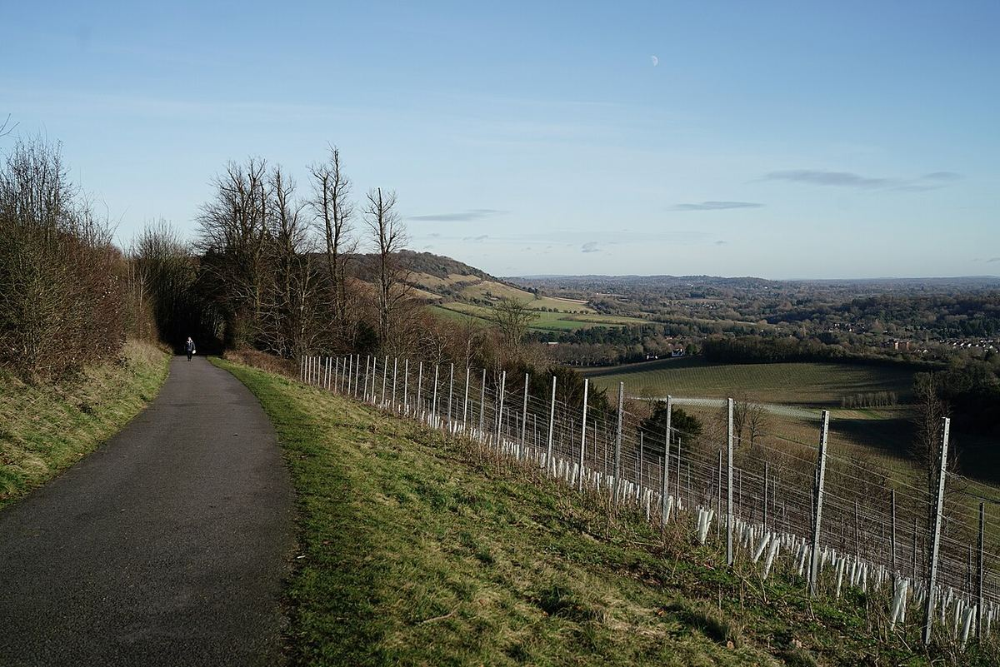

England
England is one of Europe’s most northerly winegrowing countries and has become known above all for its traditional-method sparkling wines, made from Chardonnay, Pinot Noir and Pinot Meunier in the south of the country, often on chalky soils.

History
The vine probably reached England with the Romans, and during the Middle Ages cultivation was maintained around monasteries and large estates. The Domesday Book, the great survey ordered by William the Conqueror in 1086, already records dozens of vineyards in the south of the country. Over time, however, local winegrowing declined: the climate was difficult, the dissolution of the monasteries in the sixteenth century removed many of the main growers, and the country grew used to importing wine from Bordeaux, the Iberian Peninsula and elsewhere. England thus became a great market and a decisive player in the international wine trade rather than a producer.
Paradoxically, the history of sparkling wine has an English chapter. In 1662 the scientist Christopher Merret presented a paper to the Royal Society describing how coopers added sugar to wines to make them sparkle, and English glass bottles, stronger because they were made in coal-fired furnaces, could withstand the pressure. Yet the country’s own wine production barely existed.
The modern revival began after the Second World War. In 1952 the Hambledon vineyard was planted in Hampshire, regarded as the first commercial vineyard of the modern era, and in the following decades small plantings spread, mainly of hybrid varieties or early-ripening German crossings such as Seyval Blanc, Müller-Thurgau and Bacchus. The great turning point came at the end of the 1980s, when Nyetimber planted the three classic Champagne varieties in West Sussex with the aim of making traditional-method sparkling wine. Its success, together with that of other pioneers such as Ridgeview, demonstrated the potential of southern England and attracted considerable investment, including from Champagne houses that have planted vineyards in the country.
Climate
The climate is cool and maritime, with mild summers, a long growing season and rainfall spread throughout the year. Spring frosts, uneven flowering and wet autumns are the main risks, and harvests vary greatly from one year to the next. Grapes ripen slowly and retain high acidity, an ideal condition for sparkling base wines. Warming over recent decades has made ripening more regular and has also encouraged still wines, above all whites and some light reds from Pinot Noir.
Regions and soils
Most vineyards are concentrated in the south-east and south of England: Sussex, Kent, Hampshire, Surrey and Essex, with plantings also in the south-west and in other areas further north. A significant share of these vineyards lies on the chalk hills of the North Downs and South Downs, which belong to the same great geological formation of the Paris Basin that extends beneath Champagne. Clay, sand and sandstone soils are also common, such as those of the Weald, between the two ranges of hills.
Styles
The signature style is traditional-method sparkling wine, with a second fermentation in bottle, made from Chardonnay, Pinot Noir and Pinot Meunier. Producers make non-vintage and vintage cuvées, Blanc de Blancs, Blanc de Noirs and rosés, with marked acidity and a fresh, fruity profile. Among still wines, aromatic whites from Bacchus stand out, a crossing of German origin that has become the country’s most characteristic white variety, alongside Chardonnay and Pinot Noir.
Regulations
Wines made from English grapes may use the protected designations English Wine and, for quality sparkling wines, English Quality Sparkling Wine, which set authorised varieties and production methods. Sussex also has its own designation of origin. These wines should not be confused with so-called British wine, a drink made from imported grape concentrate with no connection to the country’s vineyards.
Regions & appellations
Sussex
Protected Designation of Origin (PDO) · Sussex, on the south coast of England, is one of the birthplaces of English traditional-method sparkling wine. Its vineyards are spread between the chalk hills of the South Downs and the clay and sandstone soils of the Weald.
Kent
Wine region (English Wine PDO) · Kent, in the far south-east of England, is one of the country’s main wine areas. On the chalk hills of the North Downs and the soils of the Weald, it produces mainly traditional-method sparkling wines and still whites from Bacchus and Chardonnay.